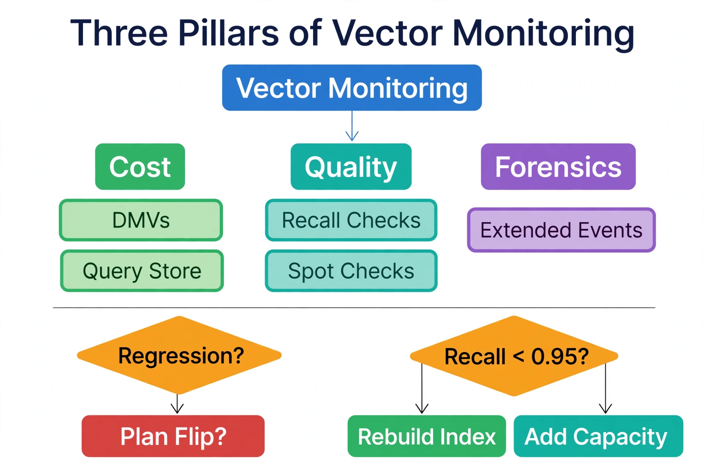

Chapter 14: Monitoring Vector Query Performance in SQL Server
Vector queries fail differently from ordinary queries. An OLTP query that slows down usually shows it in duration and logical reads; a vector query can return in the same 40 milliseconds while silently dropping from 98% recall to 70% because the data distribution drifted under a stale DiskANN index. Monitoring vector performance therefore means tracking two things traditional monitoring ignores: result quality (recall) alongside execution cost (CPU, I/O, latency). This chapter builds the monitoring stack for both, using the tools SQL Server DBAs already own — DMVs, Query Store, execution plans, and Extended Events — applied to vector-specific questions.
---
Finding Vector Queries in the Wild: DMVs
The first monitoring task is inventory: which queries on the instance are vector queries, and what do they cost? Because retrieval procedures are parameterized and repetitive, sys.dm_exec_query_stats gives you the aggregate picture immediately. Filter the cached plans by the telltale function names:
-- Inventory: top vector queries by total CPU across the instance
SELECT TOP (20)
qs.execution_count,
qs.total_worker_time / 1000.0 / qs.execution_count AS avg_cpu_ms,
qs.total_elapsed_time / 1000.0 / qs.execution_count AS avg_duration_ms,
qs.total_logical_reads / qs.execution_count AS avg_logical_reads,
SUBSTRING(st.text, 1, 120) AS query_snippet
FROM sys.dm_exec_query_stats AS qs
CROSS APPLY sys.dm_exec_sql_text(qs.sql_handle) AS st
WHERE st.text LIKE '%VECTOR_DISTANCE%'
OR st.text LIKE '%VECTOR_SEARCH%'
ORDER BY qs.total_worker_time DESC;Read this output with vector-specific eyes. High avg_cpu_ms with low logical reads on a VECTOR_DISTANCE query means compute-bound exact search — the signature of a corpus that has outgrown the exact path and needs the DiskANN index. High logical reads on a VECTOR_SEARCH query means the graph walk is missing the buffer pool — a memory-sizing problem, not an index problem. And a sudden change in execution_count patterns usually traces to an application deployment changing retrieval behavior, which is worth correlating with release logs before tuning anything.
For the queries behind a stored procedure, join to sys.dm_exec_procedure_stats instead — retrieval almost always goes through procedures (Chapter 10's parameterization guidance), and procedure-level aggregates are cleaner than statement-level ones when one procedure issues both the ANN lookup and the relational enrichment joins.
---
Reading Vector Execution Plans
Pull the actual execution plan for your retrieval procedure and look for three things. First, which access path the optimizer chose — the vector index seek (approximate path) or a scan with a sort on the computed distance (exact path). After statistics updates on a fast-growing chunk table, the optimizer can flip between these paths; the flip is the most common cause of sudden vector latency changes, and Query Store's plan-forcing (or Automatic Tuning's plan correction from Chapter 10) is the safety net.
Second, where the relational filters sit relative to the vector operation. In a healthy plan, selective relational predicates (tenant, published flag, category) reduce the row set before or alongside the vector ranking. If you see the vector operation running over the full table with filters applied afterward on millions of rows, the query shape needs restructuring — pre-filter in a CTE or derived table so the optimizer can push the predicate down.
Third, the sort. Exact search plans show a Top-N Sort over the computed VECTOR_DISTANCE expression; its memory grant scales with the rows sorted. If the grant spills to tempdb (look for sort warnings), the query is sorting more rows than it should — usually because a pre-filter is missing or because the corpus has grown past the point where exact search is viable.
-- Which plan is the retrieval procedure actually using right now?
SELECT qs.plan_handle, qs.execution_count,
qs.last_elapsed_time / 1000.0 AS last_duration_ms
FROM sys.dm_exec_procedure_stats AS qs
WHERE OBJECT_NAME(qs.object_id, qs.database_id) = 'usp_RetrieveChunks';
-- Then: SELECT * FROM sys.dm_exec_query_plan(plan_handle) for the actual plan---
Query Store: The Vector Performance Record
Enable Query Store on every database holding vectors — it is the durable record that DMVs cannot be, since DMV counters reset on service restart and plan cache eviction. For vector workloads, Query Store earns its keep in two specific ways.
First, regression detection on repetitive shapes. Retrieval queries execute the same parameterized shape thousands of times a day, which makes regressions statistically obvious: a step change in average duration for usp_RetrieveChunks with no application change points at a plan flip or a data-distribution change. Query Store's "Top Resource Consuming Queries" and plan comparison views turn that investigation from archaeology into a five-minute exercise.
Second, wait statistics per query. Query Store's wait stats break down where vector query time goes: SOS_SCHEDULER_YIELD dominating means CPU-bound distance computation (exact search under load); PAGEIOLATCH_SH dominating means the vector data is not resident (memory sizing); LCK_M_S appearing on a retrieval query means your read-committed-snapshot setting from Chapter 10 is not actually enabled. Each wait type maps to a specific remediation — that is the whole point of collecting them.
-- Query Store: wait profile for the retrieval workload
SELECT qsq.query_id,
ws.wait_category_desc,
SUM(wrs.avg_query_wait_time_ms * wrs.count_executions) AS total_wait_ms
FROM sys.query_store_query AS qsq
JOIN sys.query_store_plan AS qsp ON qsp.query_id = qsq.query_id
JOIN sys.query_store_runtime_stats AS wrs ON wrs.plan_id = qsp.plan_id
JOIN sys.query_store_wait_stats AS ws ON ws.runtime_stats_id = wrs.runtime_stats_id
WHERE qsq.object_id = OBJECT_ID('dbo.usp_RetrieveChunks')
GROUP BY qsq.query_id, ws.wait_category_desc
ORDER BY total_wait_ms DESC;---
Monitoring Recall: The Metric Other Databases Don't Have
Latency and CPU tell you the query ran well; recall tells you it ran correctly. No DMV measures recall — you have to instrument it. The Chapter 9 spot-check pattern (comparing VECTOR_SEARCH results against exact VECTOR_DISTANCE ground truth on a sample of queries) becomes a scheduled job that writes to a history table:
-- Recall history table: trend this like any other SLI
CREATE TABLE dbo.VectorRecallHistory (
MeasuredAt DATETIME2(0) NOT NULL CONSTRAINT DF_Recall_MeasuredAt DEFAULT SYSUTCDATETIME(),
SampleSize INT NOT NULL,
AvgRecallAt10 DECIMAL(5,4) NOT NULL,
MinRecallAt10 DECIMAL(5,4) NOT NULL,
CONSTRAINT PK_VectorRecallHistory PRIMARY KEY (MeasuredAt)
);
-- Alert rule of thumb: page when avg recall@10 < 0.95,
-- investigate when it trends down three consecutive runs.
-- A falling recall with flat latency = stale index or drifted data distribution.
-- A falling recall with rising latency = resource pressure (memory/CPU).The diagnostic split in that comment is worth memorizing because it determines the response. Recall falling while latency stays flat means the index no longer represents the data — rebuild it (or check whether a recent bulk load bypassed the refresh cycle). Recall and latency degrading together means resource pressure — the instance needs memory, CPU, or the noisy-neighbor governance from Chapter 12. One is an index maintenance problem; the other is a capacity problem; treating one as the other wastes a weekend.
---
Extended Events: Capturing the Slow Ones
For the queries that escape aggregate monitoring — the occasional 5-second retrieval in a sea of 40-millisecond ones — an Extended Events session capturing slow vector queries with their plans gives you the forensic record:
-- Capture vector queries running longer than 2 seconds, with plans
CREATE EVENT SESSION [SlowVectorQueries] ON SERVER
ADD EVENT sqlserver.rpc_completed(
ACTION(sqlserver.sql_text, sqlserver.query_hash, sqlserver.client_app_name)
WHERE ([duration] > 2000000
AND ([sqlserver].[like_i_sql_unicode_string]([sqlserver].[sql_text], N'%VECTOR%')))),
ADD EVENT sqlserver.sql_batch_completed(
ACTION(sqlserver.sql_text, sqlserver.query_hash, sqlserver.client_app_name)
WHERE ([duration] > 2000000
AND ([sqlserver].[like_i_sql_unicode_string]([sqlserver].[sql_text], N'%VECTOR%'))))
ADD TARGET package0.event_file(
SET filename = N'C:\XEvents\SlowVectorQueries.xel',
max_file_size = 100, max_rollover_files = 5);
GO
ALTER EVENT SESSION [SlowVectorQueries] ON SERVER STATE = START;Correlate slow-query events with the recall history timestamps. A slow query at the same time recall dips tells a different story from a slow query with recall intact — the first is data/index health, the second is resource contention. Keep the session's threshold aligned with your retrieval SLA (the 2-second threshold above is illustrative; set it just above your p99 target so the session captures true outliers, not normal traffic).

The top half organizes monitoring into three pillars: Cost (green — DMVs plus Query Store for CPU, reads, waits, plans), Quality (teal — recall history and scheduled spot-checks), and Forensics (purple — Extended Events capturing the slow ones). The bottom half turns signals into actions: a Regression? (amber) means suspect a Plan Flip (red); Recall < 0.95? (amber) splits on latency — flat latency means a stale index, so Rebuild Index (green); rising latency means Add Capacity (teal). The diagram makes the recall-plus-latency pairing — the real diagnostic — impossible to skip.
---
Key Takeaways
sys.dm_exec_query_stats filtered on VECTOR_DISTANCE/VECTOR_SEARCH: CPU-bound exact search signals a corpus ready for the DiskANN index; I/O-bound approximate search signals a memory-sizing problem.SOS_SCHEDULER_YIELD vs PAGEIOLATCH_SH vs LCK_M_S) map directly to remediations.VECTOR_SEARCH against exact ground truth, trend recall@10, and alert below 0.95. Falling recall with flat latency means rebuild the index; falling recall with rising latency means add capacity.QueryOptimizer — Self-Hosted SQL Performance Workbench
EXPLAIN visualizer · Index advisor · Slow query dashboard · SQL Server
Test yourself on this chapter
5 questions · instant scoring · explanations included